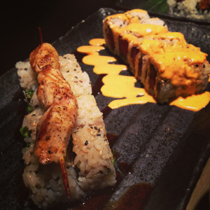
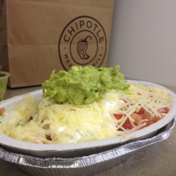
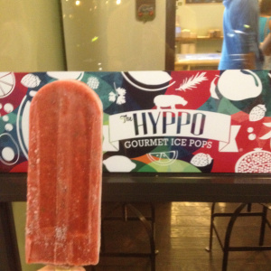

Doesn't your mouth salivate when you see something that relates to food? Even if it's simply the word food? Mine certainly does! Since I could remember, I have always loved experiencing the flavors, textures, looks and especially the tastes of food. From Japanese to Italian to simple American food, I can hardly ever wait for the next meal.From my love of food, I have tried to find different ways to actively engage in the foodie scene. I have tried cooking, which I'm not on an Emril status yet; I've tried to join millions of people on Instagram and take mouthwatering foodie uploads, but I don't necessarily have the patience to bend down, stand on chairs or keep the food from not going into my mouth for that long; and I have tried to start a food blog, which I think has been a strong success. Starting a food blog has strengthened my writing abilities and has also helped improved my multimedia managament abilities since I incorporate photos and host my blog on Wordpress. Below I will share some tips on how to start a food blog of your own and I will share some of the pictures and videos I have taken to incorporate into my blog. Happy eating! Look at my food blog here!
Food Blogging Tips
Creating a food blog is easy once you find a focus. Decide whether you want to write about restaurants in your area, like I do, or write about cooking food in the kitchen. Some other suggestions include writing a blog on sweet treats or writing a blog that highlights dishes and restaurants that are vegetarian friendly.
Get creative when you write about food. Everyone wants to hear everything about food, so let your words work the flavors of the food you're trying to write about. Instead of something tasting good, use adjectives to bring out the tastes of the meal you had. Would you rather have a piece of meat that was good or a piece of meat that was juicy, rich in flavor and cooked to the perfect temperature? It's all about the wording.
Open up to trying new things! All food is edible, so there is no reason to not try something new! Exploring different foods from different cultures makes writing about food more enjoyable. Seeing how people all acorss the world share their flavors of food not only cultures yourself, but it also gives you more varieities of posts to write!
Always show a level of respect when you're writing about a restaurant. Restaurants are businesses and rely on customer feedback to make improvements. If you negative comments to write on your blog, make sure you stay professional and don't be too harsh. Constructive criticism always works best. Maybe the restaurant will thank you for bringing some of your concerns to them.
Food Blogging Multimedia - Video
Food Blogging Multimedia - Photos
 Sushi at Dragonfly in Gainesville, Fla.

Enjoying Chipotle Mexican Grill

Popsicles at The Hyppo Gourmet Ice Pops in downtown Gainesville, Fla.